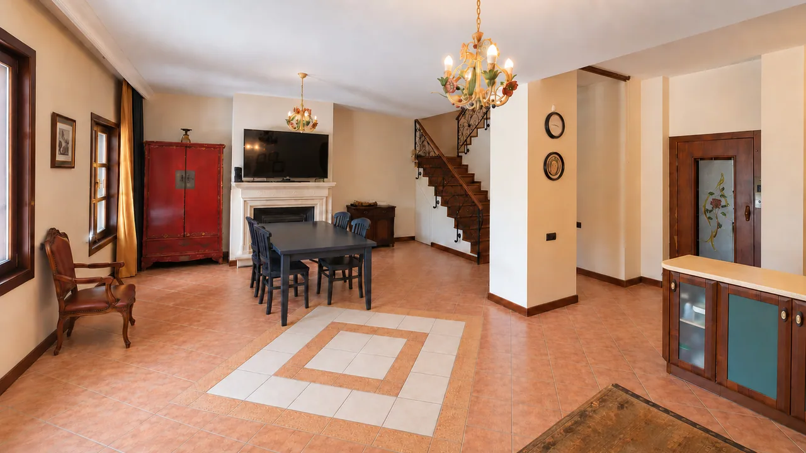
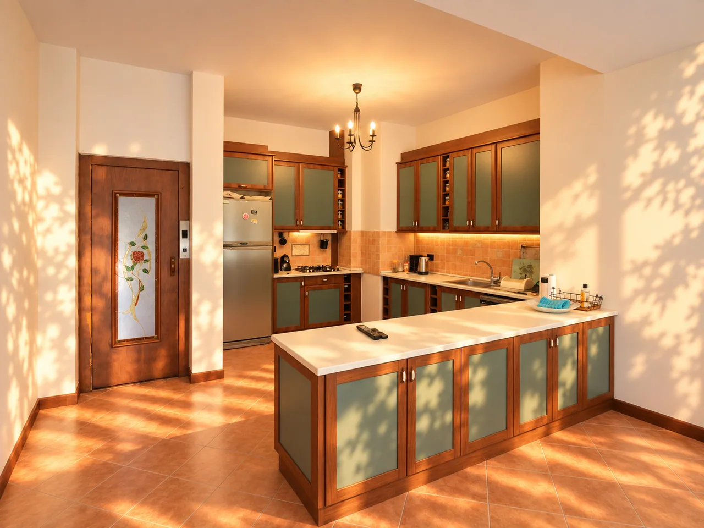
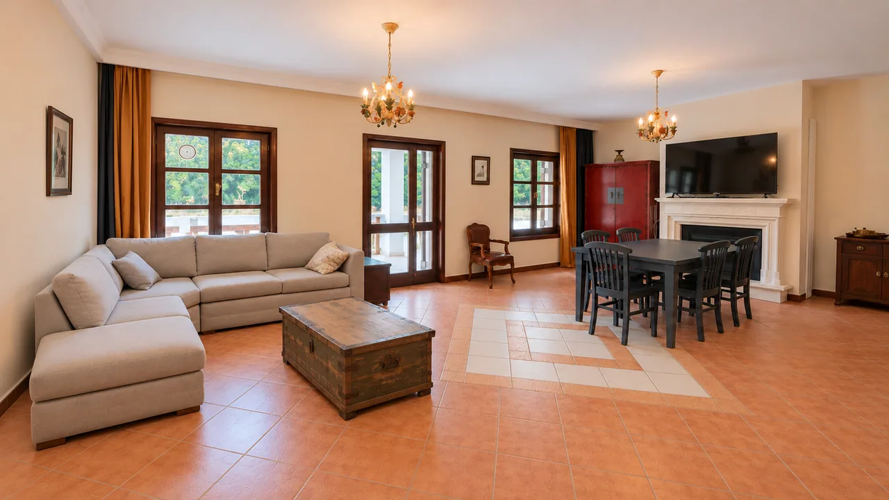
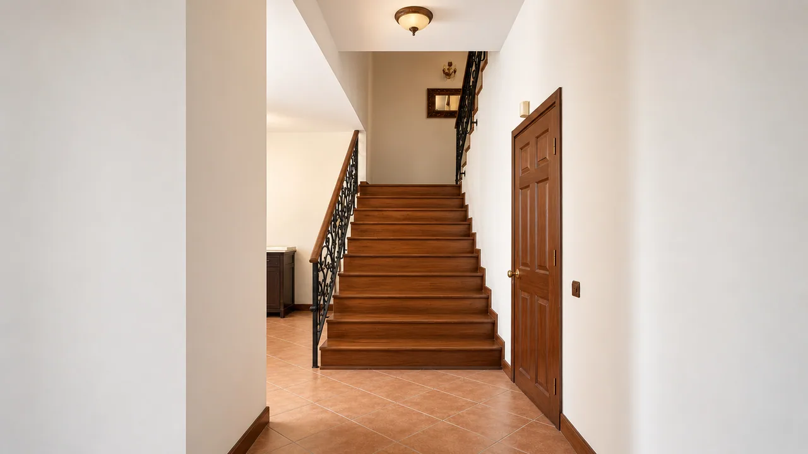
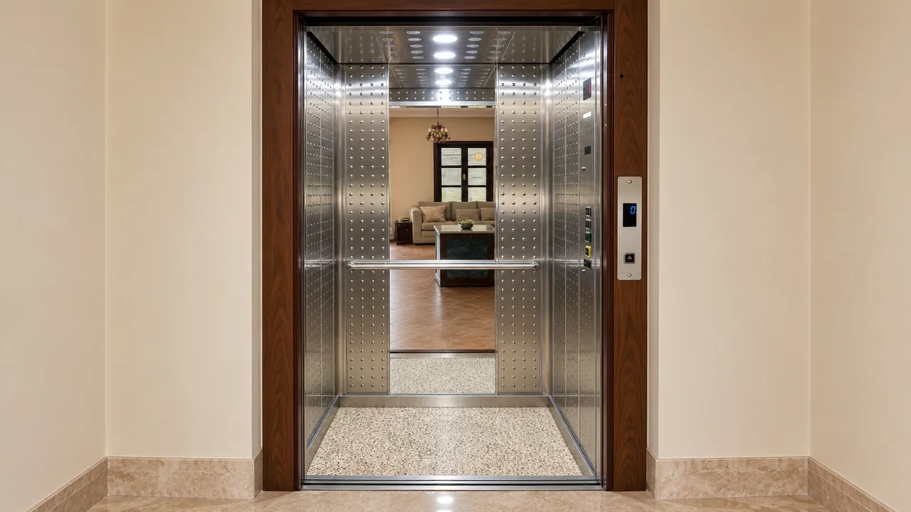

Basement: the pool and garden floor
The basement sits level with the garden and the pool. With a living room of about 54 m² and its own kitchen it is a complete home in itself, opening straight onto the garden and the private pool of roughly 50 m² of water. In summer it is laid out for poolside life, outdoor meals and entertaining.
The floor also holds a hall, a guest WC and an annexe of about 27 m² with its own entrance, easily used as a guest room, a staff room or an office.
- Garden living room · kitchen · hallopen plan56.4 m²
- Room with its own entrancethe listing’s annexe25.8 m²
- Guest WC—
Finish area in the model 93.3 m² · Lift stop · Opens onto the pool terrace




